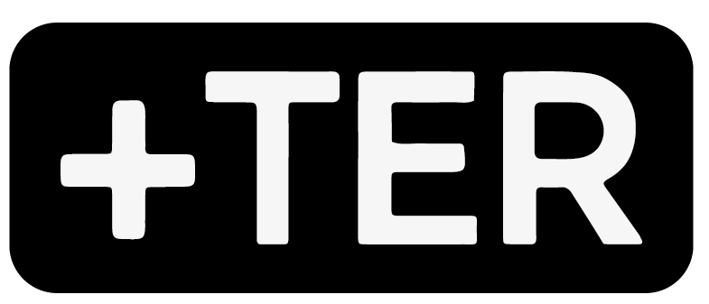
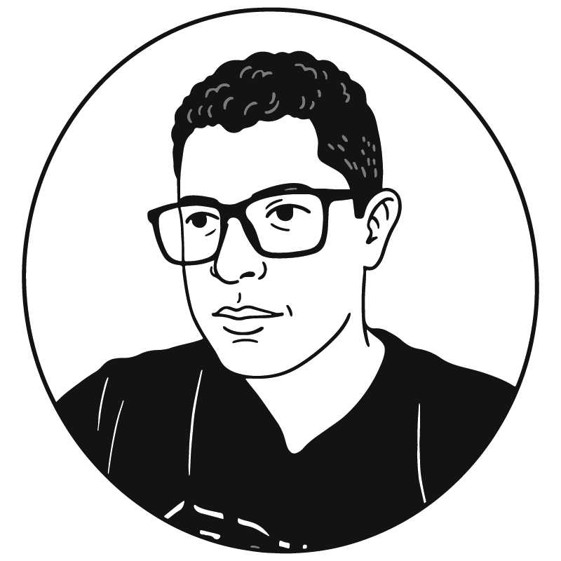

Caficultor · Co-creador +TER
Lider Gremial Cafetero · Andes, Antioquia
"Naci en el campo y desde el construyo soluciones. El liderazgo rural ha dejado de ser folklorico para volverse tecnico, global y soberano."

Andes, Antioquia · Colombia · 1640 msnm
ADN visual y conceptualizacion · Minimalismo Tecnologico Monocromatico
Soy Alexander Taborda, caficultor del suroeste antioqueno. Naci en el campo y desde el construyo soluciones. La tecnologia mas poderosa es la que entiende el territorio, la que habla con el caficultor en su propia lengua, convirtiendo conocimiento local en inteligencia territorial.
El lider cafetero que usa IA para transformar el campo, sin perder el olor a tierra.
IA, herramientas digitales y automatizacion aplicada al territorio rural. Notion, TeoBOT, Claude, NotebookLM como infraestructura.
Emprendimiento rural, economia solidaria y generacion de valor. Modelos sostenibles que nacen del territorio mismo.
Identidad cafetera, liderazgo gremial y desarrollo territorial. Conocimiento que nace del campo y vuelve a el.
La ecuacion del desarrollo rural construida desde adentro.
El MCI — Mapa de Contexto Integrado — como herramienta viva de lectura territorial: actores, recursos, tensiones y oportunidades.
Liderazgo, facilitacion, pensamiento sistemico. Capacidades que se construyen en la practica territorial.
Tecnologia que amplifica la capacidad humana sin reemplazar el conocimiento local.
Un modelo de desarrollo rural construido desde la realidad del territorio.
La historia que construye la marca · Tres actos
De donde vengo
Creci entre cafetales — literalmente. Y esa experiencia me enseno algo que ninguna universidad ensena: el campo es el laboratorio mas complejo que existe. Lo que falta no es inteligencia en el territorio. Falta conectarla.
El puente que falta
La tecnologia avanza y el campo se queda atras, no porque los campesinos sean lentos, sino porque nadie habla su idioma. Yo soy de los dos mundos. Y eso me da una responsabilidad que no puedo ignorar.
Construyendo +TER
Estoy construyendo un puente. Se llama +TER. No es una plataforma mas — es una nueva forma de entender el territorio. Desde Andes, Antioquia, para el campo colombiano.
Tono documental, nunca corporativo
"El campo colombiano enfrenta grandes retos de competitividad..."
"Esta semana en el Comite aprendi que los datos sin contexto son ruido. Te cuento que hicimos."
"Soy experto en transformacion digital agropecuaria."
"Soy caficultor. Llevo 10 anos en el territorio. Esto es lo que la IA no me puede ensenar de el."
"Comparte si te parecio util este contenido."
"Que herramienta usarias tu para mapear tu territorio? Cuentame."
Especificaciones tecnicas · Minimalismo Tecnologico Monocromatico
Negro + Blanco Absolutos
Negro Solido
#000000
Elementos de autoridad, tipografia, fondos oscuros
Blanco Puro
#FFFFFF
Fondo de pagina, white space, contraste maximo
Se prohibe el uso de escalas de grises intermedias en los elementos principales. El contraste maximo es el simbolo de la claridad que Alexander aporta al territorio.
Archivo + JetBrains Mono
Titulos — Bold / Extra Bold · Caja Alta · Imponentes
Marca
Personal
Cuerpo de Texto — Regular / Light · Interlineado generoso
El liderazgo rural ha dejado de ser folklorico para volverse tecnico, global y soberano.
Microtipografia — Monospaciada · Etiquetas tecnicas
+TER · TeoBOT · MCI · AIaaS
Precision · Apertura · Estructura
Los proyectos son badges
Cinco formatos · Informa · Educa · Motiva · Emociona · Conecta
Inicio: 07.04.2026 · 19:00 h · Hora 0 · Andes, Antioquia
Fundamentos
Perfil LinkedIn con narrativa +TER
Bio Instagram coherente
Pagina Notion publicada
Sistema visual aplicado
Prueba
3 publicaciones por semana
Probar formatos clave
Medir alcance y conexiones
Identificar resonancia
Amplificacion
Colaboraciones con lideres
Primer conversatorio +TER
Ponencias gremiales
20 aliados territoriales
Cosecha
Suscriptores TeoBOT activos
Inscritos Agricultura+IA
Evaluacion de resultados
Estrategia siguiente ciclo
Nuevos seguidores LinkedIn en 80 dias
Conversaciones reales con lideres rurales
Oportunidades o alianzas concretas
Primer cliente AIaaS o inscrito al curso
Alexander es el arquitecto · Los proyectos son las obras
// Alexander Taborda · Marca Personal · 2026
Caficultor. Lider gremial. Cocreador +TER. Andes, Antioquia, Colombia. Construyendo el puente entre el campo y la tecnologia, desde el territorio mismo y para quienes lo habitan. El liderazgo rural ha dejado de ser folklorico para volverse tecnico, global y soberano.
CONTEXTO + HABILIDADES + HERRAMIENTAS
═══════════════════════════════════
= INTELIGENCIA TERRITORIAL